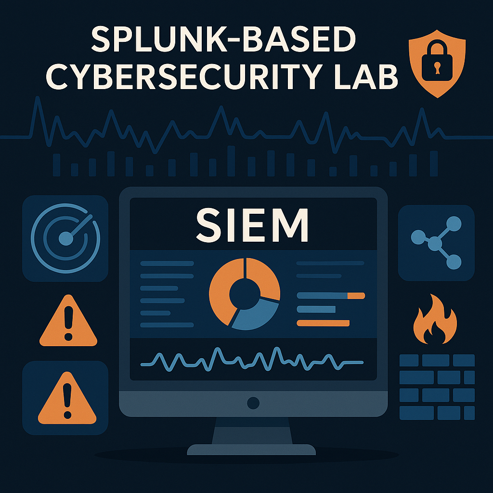
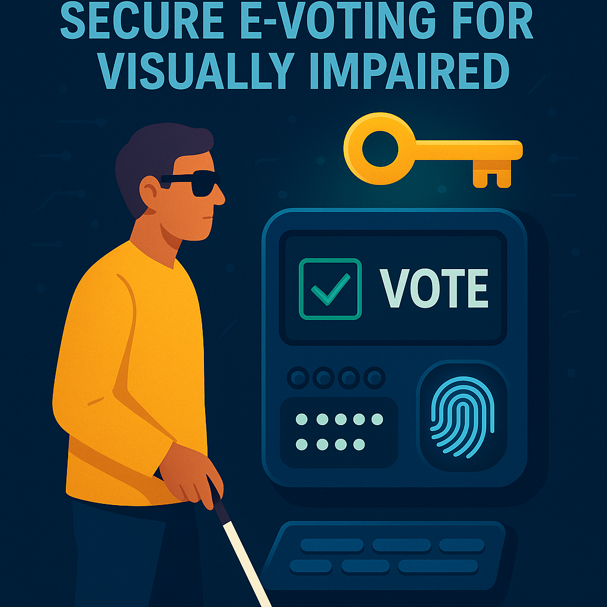

My research interests lie at the intersection of data science, machine learning, cybersecurity, and applied digital forensics. I am particularly drawn to the development of intelligent systems that leverage real-time data for predictive modeling and decision support, especially in high-impact domains such as healthcare, agriculture, and infrastructure. This includes the design of robust machine learning frameworks for clinical risk monitoring and environmental intelligence, as well as the implementation of interpretable models using Python, XGBoost, and convolutional neural networks (CNNs). In the area of digital forensics and cybersecurity, I am focused on the use of memory analysis, registry inspection, and packet forensics to detect and reconstruct advanced persistent threats (APTs) and network-based attacks. My work in this field includes system-level investigations using tools such as Autopsy,MagnetAxiom SleuthKit, Volatility, Splunk, and Wireshark to trace malware behavior, uncover digital artifacts, and document incident timelines. I also explore network security from a forensics-first perspective investigating DNS tunneling, phishing vectors, and protocol anomalies to understand attacker behavior and enhance intrusion detection systems. Additionally, I have a growing interest in environmental analytics, where I apply geospatial tools such as QGIS and Google Earth Engine to assess chemical distribution and ecological risk in wetland areas. This work involves satellite data processing, land use classification, and spatial modeling to inform environmental decision-making. I am also deeply interested in embedded system applications, particularly in developing assistive technologies and remote monitoring devices using fuzzy logic, microcontrollers, and real-time sensors for field-based automation. Collectively, my research is driven by a desire to integrate data engineering, intelligent algorithms, and security-first design to build systems that are not only technically robust but also socially impactful.
For this project, I designed a scalable, real-time sepsis prediction system that integrates machine learning with wearable technology for early ICU risk detection. Using Python and XGBoost, I trained the model on the PhysioNet Sepsis Challenge dataset, applying SMOTE for class balancing and normalization for consistent feature scaling. The final model achieved 97.67% accuracy with an AUC of 0.83. The best-performing model was serialized and saved as a .pkl file for seamless deployment. The system collects heart rate data from Amazfit Bip 5 smartwatches through Zepp and Strava APIs and displays dynamic risk predictions via a Streamlit web interface. Telegram bot supports medication alerts and clinician-patient communication. This end-to-end solution enables proactive sepsis detection, real-time monitoring, and faster ICU interventions through AI-powered clinical decision support.
I developed an adaptive image compression system using convolutional autoencoders (CAEs) to dynamically adjust color quantization based on image complexity. The model was trained on the CIFAR-100 dataset and achieved a balance between high compression efficiency and perceptual image quality, with a PSNR of 26.09 and an SSIM of 0.8558. Unlike traditional quantization methods like K-means, which apply uniform compression, my approach uses region-specific adjustments to preserve detail in complex areas while minimizing redundancy in simpler regions. The system architecture includes normalization, encoding, a latent bottleneck layer, decoding, and an evaluation module. Visualization tools like t-SNE and error distribution plots were used to validate the latent space organization and reconstruction performance. The model training and testing process was automated end-to-end, with final deployment potential for use in resource-constrained environments. This work demonstrates how deep learning can significantly improve the adaptability and visual fidelity of image compression systems.

In this project, I built a virtual cybersecurity lab using Splunk SIEM to simulate and investigate real-world cyberattacks. Using Kali Linux tools such as Nmap, I generated a series of reconnaissance and scanning events, configured multiple log sources, and used Splunk to detect, correlate, and visualize the attack patterns. I developed alerting rules, analyzed system and network logs, and produced structured incident reports detailing detection timelines, potential impact, and remediation steps. This hands-on lab demonstrated the use of SIEM tools for proactive threat detection, real-time security analytics, and end-to-end incident response.
In this project, I conducted a series of digital forensic investigations focusing on Windows registry analysis, memory forensics, and deleted file recovery. Using tools such as Autopsy, SleuthKit, Volatility, and Foremost, I examined NTFS and FAT file systems, recovered user activity timelines, and carved data from formatted drives. The analysis included registry hive inspection, MACB timestamp tracking, encrypted container evaluation, and GPS metadata extraction from multimedia artifacts. These investigations replicated real-world forensic scenarios involving policy violations, digital evidence reconstruction, and incident reporting demonstrating proficiency in end-to-end forensic methodology across system layers.
This project involved a series of hands-on cybersecurity investigations simulating real-world attack scenarios, using tools such as Wireshark, Snort, tcpdump, aircrack-ng, and Python. I conducted packet-level forensics on malicious JPEG payloads flagged by Snort alerts, performed threat validation via VirusTotal, and reconstructed exploitation timelines through PCAP analysis. Investigations included DNS tunneling detection, email-based malware delivery, cross-site scripting recovery, and WEP key decryption. By tracing activity across the OSI model and correlating artifacts from Squid logs, hex editors, and base64-encoded payloads, I developed full attacker profiles and incident reports demonstrating deep technical skill in threat detection, evidence recovery, and network defense analysis.

This project presents a secure, accessible electronic voting system designed to empower visually impaired individuals through advanced authentication and data protection techniques. The system integrates dual-factor authentication using a fingerprint scanner and Braille keyboard, ensuring private and independent voting. Developed in Python using the waterfall SDLC model, it employs RSA encryption, salting, and hashing to secure user credentials and vote data. The platform enhances electoral participation by upholding data integrity, privacy, and accessibility bridging the gap between inclusivity and security in digital voting.
This team-based project, developed collaboratively by a group of three, my teammates and I focused on the comprehensive analysis and visualization of chemical data from soil and water samples collected across wetland pools over a 30-month period. The tool features an interactive geographic map and dynamic dropdown interface, enabling users to explore mean values of chemical variables and evaluate environmental conditions within specific wetland regions. Designed to support ecological monitoring and decision-making, the platform helps users interpret complex environmental datasets through clear, spatially organized visual insights.
This Master's project presents an intelligent monitoring solution designed to address animal welfare and exploitation in factory farming. Using fuzzy logic and Internet of Things (IoT) sensors, the system collects, processes, and analyzes real-time livestock conditions to detect abnormal patterns. Developed in Python with MySQL backend integration, the model achieved 89% accuracy based on ROC curve and confusion matrix evaluation. The project emphasizes automation, sensor-driven inference, and improved animal health decision-making, offering a scalable tool for ethical and data-informed livestock management.
As part of my undergraduate final year project, I co-developed a sensor-based navigation aid designed to help visually impaired individuals detect obstacles and water hazards more effectively. The system was built using an Arduino Mega 2560, dual ultrasonic sensors, a water sensor, and a vibration motor to provide real-time haptic feedback. We achieved a 94% detection accuracy through rigorous indoor and outdoor testing. This low-cost solution enhances user awareness, safety, and independence, especially for individuals in low-income environments where assistive technologies like guide dogs are inaccessible. The project was developed as a two-person team and inspired by a desire to make daily navigation safer and more autonomous for the visually impaired.
JnubEd is an AI-powered global learning platform that transforms academic content such as textbooks and PDFs into animated video lectures, narrated explanations, and lyrical musical summaries. It supports multilingual delivery and gamified assessments to promote inclusive, personalized education. Built using FlutterFlow for the UI, Firebase for backend and authentication, and Google Cloud Storage for content hosting, it leverages AI services for animation, text-to-speech, and auto-translation. This project aims to revolutionize educational accessibility for students worldwide by blending intelligent automation with engaging pedagogy.
JOUOC is a smart destination event planning platform that connects users with global vendors, venues, and creatives for weddings, conferences, and other occasions. It includes AI-driven budgeting, branding, itinerary, and vendor selection tools. Built with FlutterFlow, Firebase, and Google Cloud Functions, JOUOC aims to simplify every step of the event process from venue booking and guest gifts to flight and hotel coordination by offering a seamless, all-in-one solution for culturally diverse celebrations worldwide.